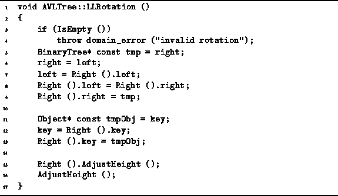
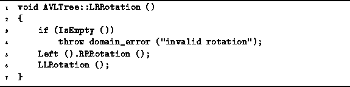
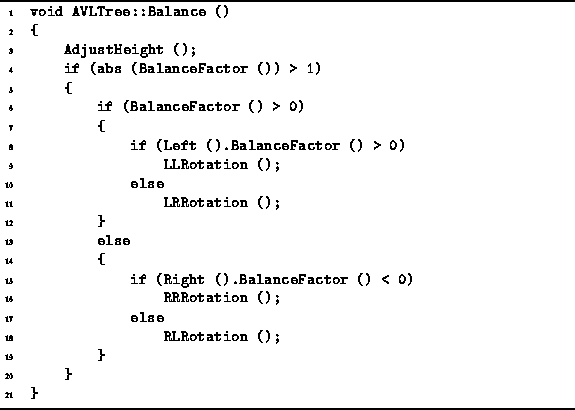

Data Structures and Algorithms
with Object-Oriented Design Patterns in C++
Data Structures and Algorithms
with Object-Oriented Design Patterns in C++
Program  gives the code for the LLRotation
procedure of the AVLTree class.
This code implements the LL rotation shown in Figure .
The purpose of the LLRotation member function
is to perform an LL rotation at the root of a given AVL tree instance.
gives the code for the LLRotation
procedure of the AVLTree class.
This code implements the LL rotation shown in Figure .
The purpose of the LLRotation member function
is to perform an LL rotation at the root of a given AVL tree instance.

Program: AVLTree Class LLRotation Member Function Definition
The rotation is simply a sequence of pointer manipulations followed by two height adjustments. Notice the rotation is done in such a way so that the the given AVLTree instance remains the root of the tree. This is done so that if the tree has a parent, it is not necessary to modify the contents of the parent.
The AVLTree class also requires an RRRotation member
function to implement an RR rotation.
The implementation of that function
follows directly from Program .
Clearly, the running time for the single rotations is O(1).
Program gives the implementation for the
LRRotation member function of the AVLTree class.
This double rotation is trivially implemented as a sequence of
two single rotations.
As above, the routine for the complementary rotation
is easily derived from the given code.
The running time for each of the double rotation functions is also O(1).

Program: AVLTree Class LRRotation Member Function Definition
When an imbalance is detected, it is necessary to correct the imbalance
by doing the appropriate rotation.
The code given in Program takes care of this.
The Balance routine tests for an imbalance by calling
the BalanceFactor function.
The balance test itself takes constant time.
If the node is balanced, only a constant-time height adjustment is needed.

Program: AVLTree Class Balance Member Function Definition
Otherwise, the Balance routine of the AVLTree class determines which of the four cases has occurred, and invokes the appropriate rotation to correct the imbalance. To determine which case has occurred, the Balance routine calls the BalanceFactor function two more times. Therefore, the time for selecting the case is constant. In all only one rotation is done to correct the imbalance. Therefore, the running time of this routine is O(1).
The Insert routine for AVL trees is inherited from
the BST class (see Program ).
The very last thing that routine does is to call the Balance function.
which has been overridden.
As a result the Insert routine
adjusts the heights of the nodes along the insertion path
and does a rotation when an imbalance is detected.
Since the height of an AVL tree is guaranteed to be  ,
the time for insertion is simply
,
the time for insertion is simply  .
.
 Copyright © 1997 by Bruno R. Preiss, P.Eng. All rights reserved.
Copyright © 1997 by Bruno R. Preiss, P.Eng. All rights reserved.